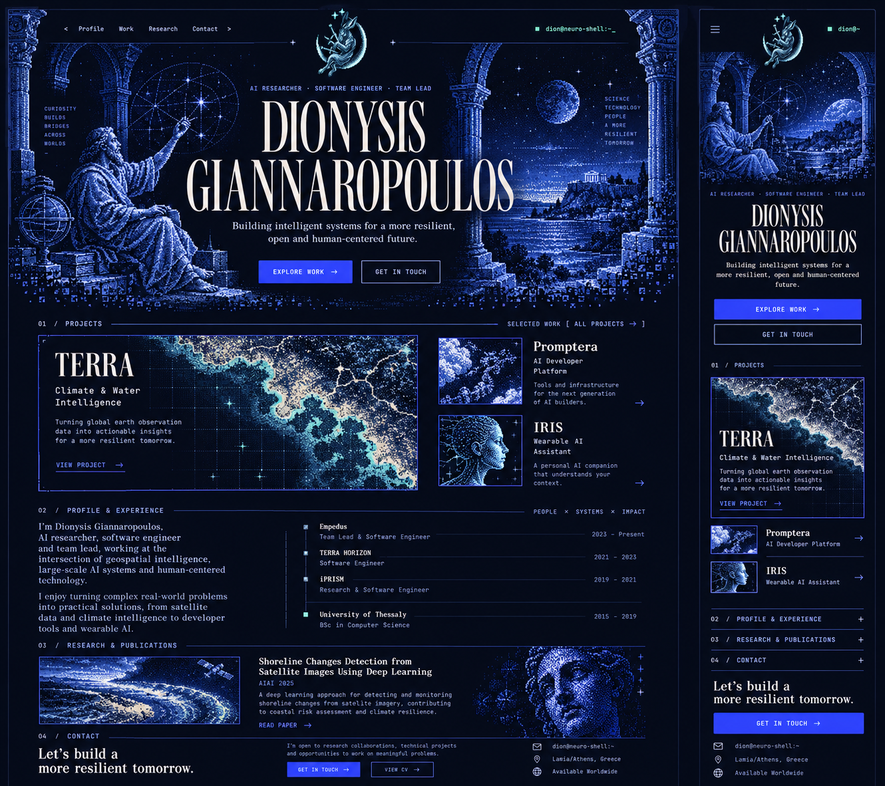
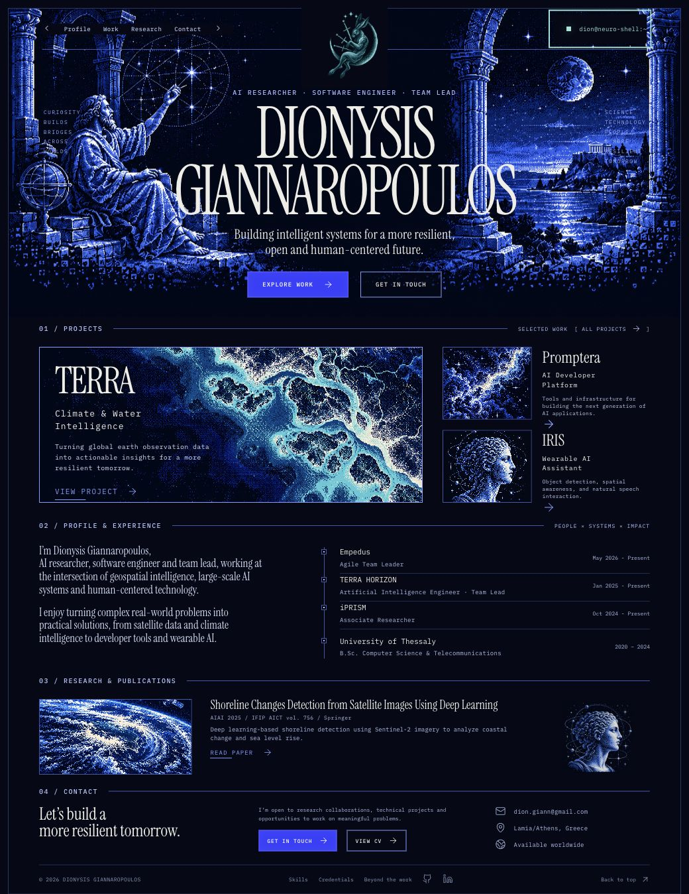
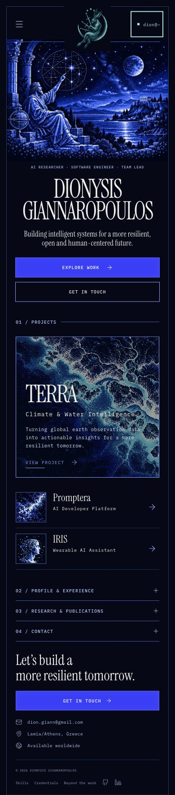

Reference is the selected generated sheet. Its desktop and mobile regions are shown separately. Text and chronology in the implementation retain the existing biography. Illustrations are regenerated, not exact extractions.


